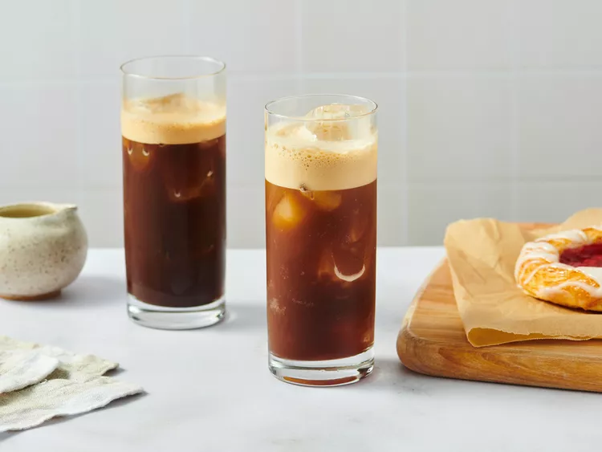

Freddo Espresso—the Refreshing Iced Coffee Delight
Freddo espresso is a delicious Greek-style iced coffee that is quick and easy to make at home.

Ingredients
- 2 shots freshly brewed espresso
- sugar, to taste (optional)
- ice as needed
Instructions
- Gather all ingredients.
- Pour espresso and sugar into a cocktail shaker. Add 4 ice cubes, cover, and shake until coffee is frothy and cold and ice has melted.
- Fill a glass with ice and pour shaken coffee over ice.
- Serve immediately.
Back to Odin Recipes